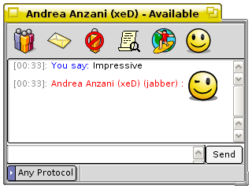
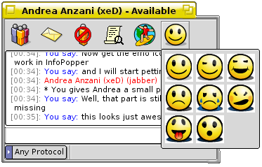

The Instant Messenger
Starting a Chat
To start a chat using the im_client with a person, you will first have to check if the person is available for a chat or not. There are three statuses in the IM kit: Available, Away and Offline. The easiest way to see if they are available for a chat is by accessing the IM kit's Deskbar replicant and choose Queries. In the Queries sub menu, you can choose the default Query. This will open a query window that lists all your online friends:

Instead of making use of live queries, you can use the tool im_contactlist.
An im_client window will stay where you put it (unless you click the deskbar icon when there is a pending message, then it'll bring a window with a pending message to the current workspace). But in the case where there is no window associated with a user it'll pop up a window on the current workspace.
Emoicons - Emotion icons (smileys)
The IM kit also comes with an alternative chat client, the im_emoclient. One of the most popluar features when it comes to instant messaging is emo icons, the possibility to add icons in the end of a sentence to show that you are happy or sad. A smiley is a representation of a smiling face, most often coloured in yellow, so also in Zeta:

The are two ways to add emoicons to a sentence that you are about to send to the person you are chatting with. The first way is to choose the icon from a menu accessable from the im_client's toolbar. The second way is to use the signs for the emoicons in the tying area in the im_client:
| :) | ||
| ;) | ||
| :D | ||
| :p | ||
| :( | ||
| :| | ||
| :`( | ||
| (l) |
With the IM kit you can also choose them from the menu bar and in the default emoicon theme, the following icons are available:

The IM kit comes with the default emoicon size set to 16, so that they shouldn't be to appearing compared to the text in the chat window. Never the less many users would like to have them bigger. The icons and their size has been set in /boot/home/config/settings/im_kit ... . As you open the settings file in your default text editor, search for <size>. As mentioned before, change the size 16 to your preferred size. In this example set to size 40.